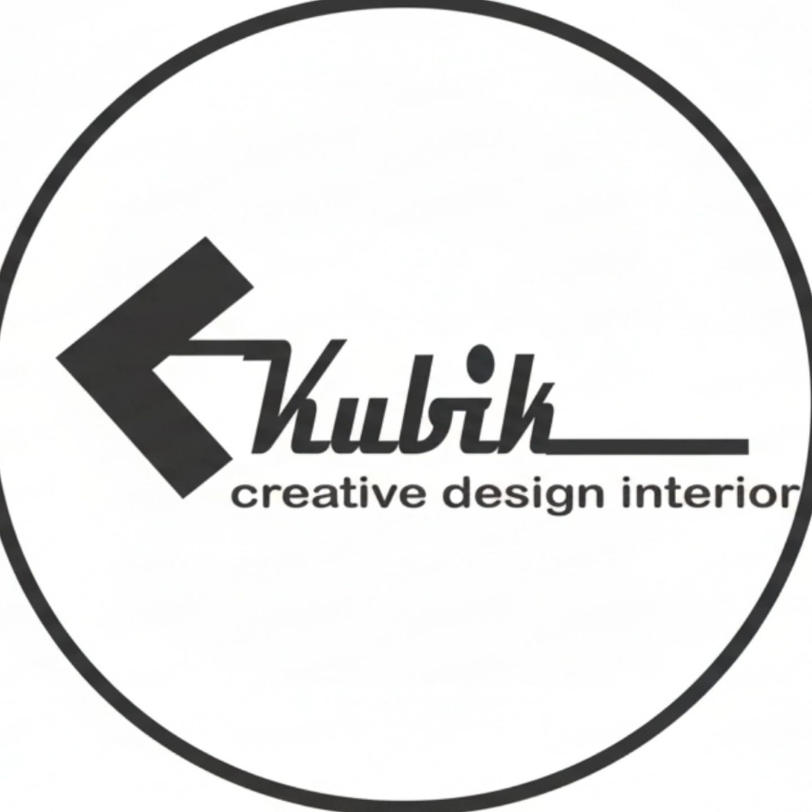

Kubik Design Interior adalah studio desain interior yang telah mengukir reputasi solid selama lebih dari satu dekade. Sejak berdiri pada tahun 2013, kami telah membantu ratusan klien mewujudkan ruang impian mereka, baik untuk hunian pribadi, ruang komersial, maupun perkantoran.
Kami dikenal berkat perpaduan unik antara desain fungsional, estetika modern, dan perhatian mendalam terhadap detail. Dengan pengalaman lebih dari 10 tahun, tim profesional kami memahami tren terbaru, material berkualitas, dan solusi tata ruang yang cerdas.
Kami tidak hanya menciptakan ruangan yang indah, tetapi juga memastikan setiap desain efisien, nyaman, dan mencerminkan karakter unik dari setiap klien.
Membawa solusi desain interior yang tidak hanya indah secara visual, tetapi juga fungsional dan memberikan kenyamanan bagi penghuninya.
© 2025 Kubik Creative Design Interior